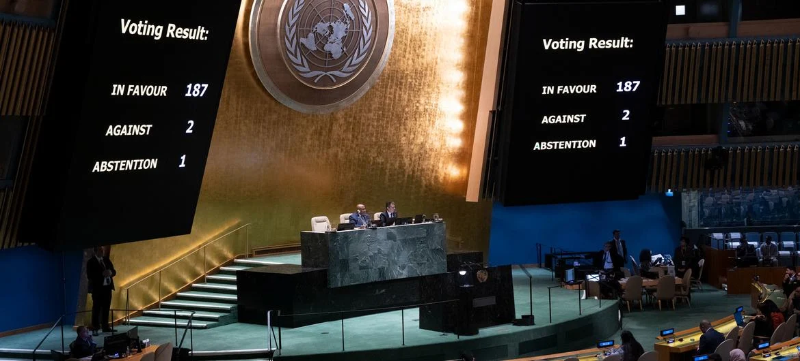
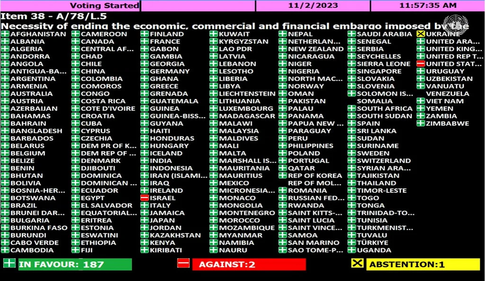

Publication d’archives
Embargo économique et commercial contre Cuba
Date indiquée par Facebook · 20 novembre 2023
Texte conservé avec la publication
Embargo économique et commercial contre Cuba
Début novembre, l'Assemblée générale de l'ONU a voté à une large majorité contre l'embargo économique et commercial imposé par les États-Unis contre Cuba depuis 1960.
Il s’agit de la 31eme fois qu’une telle résolution est adoptée par l’assemblée mondiale, qui, année après année, appelle les États-Unis à lever les sanctions contre Cuba, sans pour autant aboutir.
L'Assemblée s'est déclarée préoccupée par le fait qu'en dépit de ses résolutions remontant à 1992 (résolution 47/19), « l'embargo économique, commercial et financier contre Cuba est toujours en vigueur », et par « les effets néfastes de ces mesures sur le peuple cubain et sur les ressortissants cubains vivant dans d'autres pays ».
Mais n'oublions pas quels sont ces pays qui votent contre la levée de l'embargo :
Les États-Unis et Israël, l'abstention venant de l'Ukraine.


Sources
Archive rouge · export Facebook · AR-0002-FB-01537
À lire aussi · 6 novembre 2024 : le PCF répond à l’élection de Trump